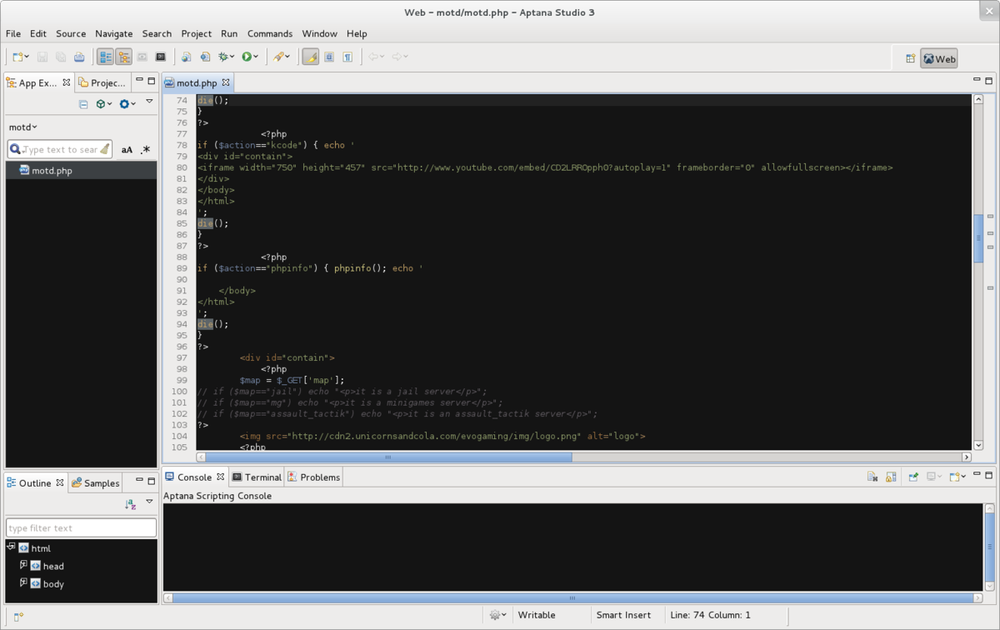

4.1.- Aptana Studio.
Aptana Studio es un entorno de desarrollo integrado de software libre basado en eclipse y que funciona bajo Windows, MacOs y GNU/Linux. Soporta una amplia variedad de lenguajes de programación como PHP, Python, Ruby, CSS, HTML y JavaScript.
Incluye soporte para la mayoría de librerías de JavaScript, como jQuery, Ext JS, DOJO y YUI entre otras. Al estar basado en Eclipse es compatible con una amplia variedad de extensiones.
Actualmente se encuentra en su versión 3 y puede descargarse de forma gratuita desde la web oficial http://www.aptana.com/

Steve Walker. IDE Aptana Studio